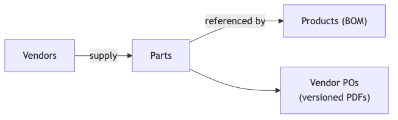

This project delivers a web-based Vendor Purchase Order
Management System for manufacturing operations. The system
centralizes master data for vendors, parts, and products (with Bills of
Materials), and enables procurement teams to create, version, and export
vendor purchase orders as PDFs.
The platform supports two procurement workflows:
Manual PO creation — select a vendor, add part
lines with quantities, and generate a versioned PDF.
BOM-driven PO generation — define a build plan
(products × build quantities), aggregate part demand across BOMs,
resolve vendor assignments and pricing, and generate one PO per
vendor.

diagram-1
2. Business Requirements and
Needs
2.1 Business Context
Manufacturing teams currently manage product BOMs in spreadsheets and
create vendor purchase orders manually. This leads to:
Data fragmentation — vendor, part, and product
information lives in disconnected Excel files.
Manual PO assembly — procurement staff must
manually calculate quantities when building multiple products.
No audit trail — changes to purchase orders are not
versioned or easily traceable.
Inconsistent part catalog — duplicate or
inconsistently named parts across product lines.
The system addresses these needs by providing a single source of
truth for master data, automated demand aggregation from BOMs,
vendor-scoped part pricing, and immutable versioned PO PDFs.
2.2 Business Objectives
#
Objective
Success Metric
BO-1
Centralize vendor, part, and product master data
All catalog data manageable in one application
BO-2
Reduce time to create vendor POs
PO creation in minutes vs. manual spreadsheet work
BO-3
Enable bulk PO generation from production build plans
One action produces POs grouped by vendor
BO-4
Maintain PO change history
Every material change creates a new downloadable PDF version
BO-5
Support bulk catalog onboarding
Excel BOM import creates products, parts, and BOM lines in one
step
2.3 Stakeholders
Role
Responsibility
Procurement / Purchasing
Create and edit vendor POs, assign parts to vendors, set unit
prices
Product / Engineering
Maintain product BOMs, import SKU spreadsheets, manage part
specifications
Operations / Production Planning
Define build plans and trigger BOM-driven PO generation
Management
Review dashboard metrics and recent PO activity
2.4 Scope
In scope
Vendor, part, and product CRUD
Structured part specifications by category (LED driver, PCB,
fastener, etc.)
Excel BOM import with embedded image extraction
Manual product BOM editing
Vendor–part assignment with per-vendor unit pricing
Manual vendor PO creation and editing
BOM-driven build plan PO generation with vendor resolution
PO versioning with PDF export per version
Dashboard with entity counts and recent PO activity
Image storage for parts, products, and BOM line images
Out of scope (v1)
User authentication and role-based access control
Inventory / stock tracking and goods receipt
Multi-currency support beyond a single configured currency
Email delivery of POs to vendors
Approval workflows for PO issuance
Integration with ERP or accounting systems
Purchase order delivery status / fulfillment tracking
2.5 User Stories and Use Cases
Epic 1: Master Data
Management
ID
User Story
Acceptance Criteria
US-1.1
As a procurement user, I want to create and manage vendor records so
that supplier contact information is centralized.
User can create, view, edit, and delete vendors with name, contact,
email, phone, and address.
US-1.2
As an engineering user, I want to maintain a parts catalog with
structured specifications so that parts are consistently described
across products.
User can create parts with name, category, JSON specs, description,
and images. Spec fields vary by category (e.g. LED driver: input/output
voltage, power).
US-1.3
As an engineering user, I want to create products with model codes
and display names so that finished goods are identifiable.
User can create products with unique model codes, display names, and
product images.
US-1.4
As an engineering user, I want to import product BOMs from Excel so
that I can onboard catalog data in bulk.
Uploading a .xlsx file creates/updates a product,
upserts parts, replaces BOM lines, and extracts embedded images.
US-1.5
As an engineering user, I want to manually edit a product BOM so
that I can adjust lines without re-importing.
User can add, edit, and remove BOM lines on the product detail page
by selecting existing parts.
Use Case UC-1: Excel BOM Import
Field
Description
Actor
Engineering / Product user
Preconditions
User has a valid product BOM spreadsheet (.xlsx)
Main flow
1. User uploads file from Products page or product detail page. 2.
System parses display name (B2), model code (B3), and BOM rows (row 6+).
3. System upserts parts with normalized names and parsed specs. 4.
System replaces product BOM and stores extracted images. 5. User sees
import summary with any skipped rows.
Alternate flow
Duplicate part names within the same file are rejected with a clear
error.
Postconditions
Product, parts, and BOM are persisted; images stored in blob
storage.
Epic 2: Vendor–Part
Relationships
ID
User Story
Acceptance Criteria
US-2.1
As a procurement user, I want to assign parts to a vendor so that PO
line pickers are scoped to that vendor’s catalog.
On vendor detail page, user can assign/unassign parts and set unit
price per assignment.
US-2.2
As a procurement user, I want unit prices stored per vendor–part
pair so that PO totals are calculated automatically.
Unit price is optional on assignment; PO creation requires a price
for every line.
Use Case UC-2: Assign Part to Vendor
Field
Description
Actor
Procurement user
Preconditions
Vendor and part exist in the system
Main flow
1. User opens vendor detail page. 2. User searches available parts
and assigns one with optional unit price. 3. Part appears in vendor’s
assigned parts table.
Postconditions
VendorPart record created; part available in PO
creation for that vendor.
Epic 3: Vendor Purchase
Orders (Manual)
ID
User Story
Acceptance Criteria
US-3.1
As a procurement user, I want to create a vendor PO by selecting
parts and quantities so that I can order from a specific supplier.
User picks vendor, adds lines (part + quantity), saves. Version 1 is
created with PDF.
US-3.2
As a procurement user, I want to edit an existing PO so that I can
adjust quantities or add/remove lines.
Saving material changes creates a new version; unchanged saves do
not create a new version.
US-3.3
As a procurement user, I want to download a PDF for any PO version
so that I can send it to the vendor.
Each version has a downloadable PDF with vendor details, line items,
quantities, unit prices, and totals.
US-3.4
As a procurement user, I want PO line pickers scoped to the vendor’s
assigned parts so that I only see relevant parts.
Part selector on PO editor shows only parts assigned to the selected
vendor.
Use Case UC-3: Create and Version a Vendor PO
Field
Description
Actor
Procurement user
Preconditions
Vendor exists with assigned parts (priced)
Main flow
1. User creates PO for vendor, adds part lines with quantities. 2.
System validates all parts are assigned to vendor with prices. 3. System
creates PO, version 1, generates PDF, stores PDF URL. 4. User later
edits lines and saves. 5. System detects change, creates version 2 with
new PDF.
Postconditions
PO has version history; each version PDF is retained and
downloadable.
Epic 4: BOM-Driven PO
Generation
ID
User Story
Acceptance Criteria
US-4.1
As a production planner, I want to define a build plan (products ×
quantities) so that part demand is calculated automatically.
User adds one or more product rows with build quantities in the
Generate from BOM dialog.
US-4.2
As a production planner, I want to preview aggregated part demand
before generating POs so that I can resolve issues.
Preview shows per-part totals, demand sources, vendor options, and
status (resolved / unassigned / ambiguous / unpriced).
US-4.3
As a production planner, I want ambiguous vendor assignments
resolved manually so that parts with multiple suppliers are handled
correctly.
User can override vendor selection for parts with multiple assigned
vendors.
US-4.4
As a production planner, I want POs grouped by vendor so that one PO
is created per supplier.
Generating from build plan creates one PO per vendor with aggregated
lines.
Use Case UC-4: Generate POs from Build Plan
Field
Description
Actor
Production planner / Procurement user
Preconditions
Products have BOM lines; parts assigned to vendors with prices
Main flow
1. User opens “Generate from BOM” on Vendor POs page. 2. User adds
products and build quantities. 3. User previews demand; resolves
ambiguous/unpriced/unassigned parts. 4. User confirms generation. 5.
System creates one PO per vendor, each with version 1 and PDF. 6. User
is redirected to vendor PO list.
Alternate flow
Products with empty BOMs or unresolved parts block generation with
actionable error messages.
Postconditions
One or more vendor POs created with correct aggregated
quantities.
Epic 5: Dashboard and
Reporting
ID
User Story
Acceptance Criteria
US-5.1
As a manager, I want a dashboard overview so that I can see catalog
and PO activity at a glance.
Dashboard shows counts for vendors, parts, products, and POs, plus a
table of the 5 most recent POs.